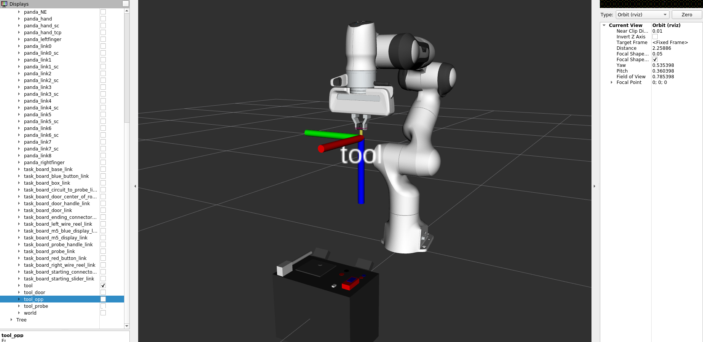
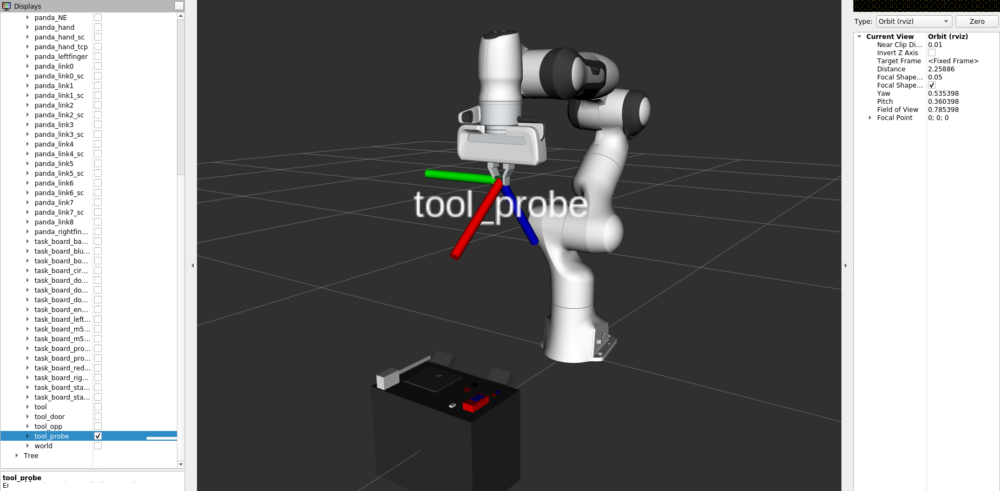
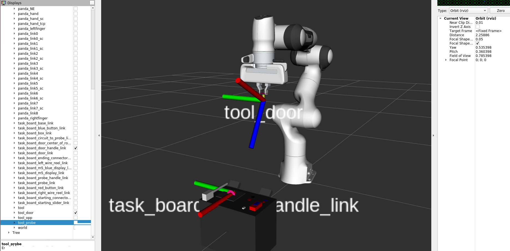
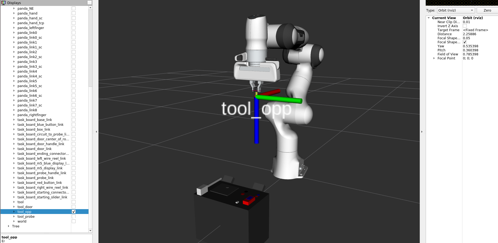

Définition de TFs au niveau de l’effecteur final
Les TFs définies au niveau de l’effecteur final
Pour faciliter la réalisations de la plupart des tâches complexes, on a décidé de définir des TFs (à l’aide de la fonction tf_static_publisher dans le launchfile superviseur “franka_positions.launch”) au niveau de l’effecteur final. Ces TFs sont les suivantes : (à rappeler que l’axe des x est représenté en rouge, l’axe des y en vert et l’axe des z en bleu)
On a défini une première TF au niveau de l’effecteur final qui se placera dans la vraie vie au niveau du bout des deux pinces, pile au milieu des deux grippeurs, la TF en question se nomme : “
tool”,
|

|
|---|
Fig. 27 Position de la TF “tool” par rapport à l’effecteur final
Pour attraper la sonde, on a défini une TF qui s’appelle “
tool_probe” et qui suit l’inclinaison de la cavité au niveau de la pince pour faciliter non seulement la saisie de la sonde mais aussi pour obtenir une trajectoire optimale pour la récupération de la sonde puis le prélèvement au niveau du capteur situé en dessous la trappe,
|

|
|---|
Fig. 28 Position de la TF “tool_probe” par rapport à l’effecteur final
Pour pouvoir agripper correctement le poignée de la trappe pour son ouverture, on a donc aussi créé une TF : “
tool_door” qui suivra l’angle d’inclinaison de l’évidemment au niveau des deux pinces, passé de 45° à 35° pour améliorer la prise du poignée, mais surtout le relachement lorsque la trappe est bien ouverte et que le bras de robot devra arrếter d’agripper le poignée (pas mal d’essais ont été réalisés pour éviter d’endommager au maximum la task-board mais surtout la trappe),
|

|
|---|
Fig. 29 Position de la TF “tool_door” par rapport à l’effecteur final
Pour une tâche comme le déplacement du connecteur de la sonde d’un port à un autre, on a défini une TF “
tool_opp” pour adapter l’orientation de l’effecteur (par rapport aux TFs) par rapport aux différentes orientations de la task-board (qui est aléatoire), pour éviter des positions limites.
|

|
|---|
Fig. 30 Position de la TF “tool_opp” par rapport à l’effecteur final